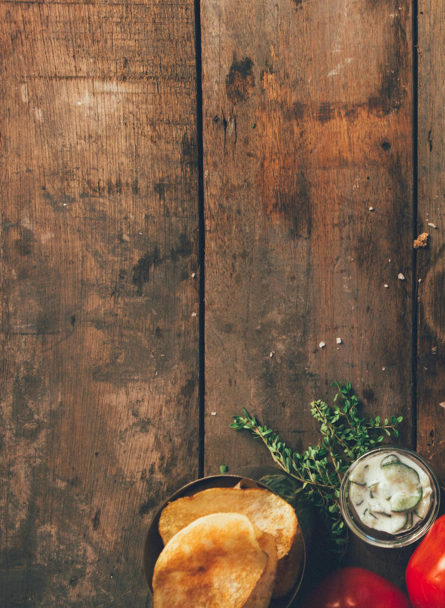
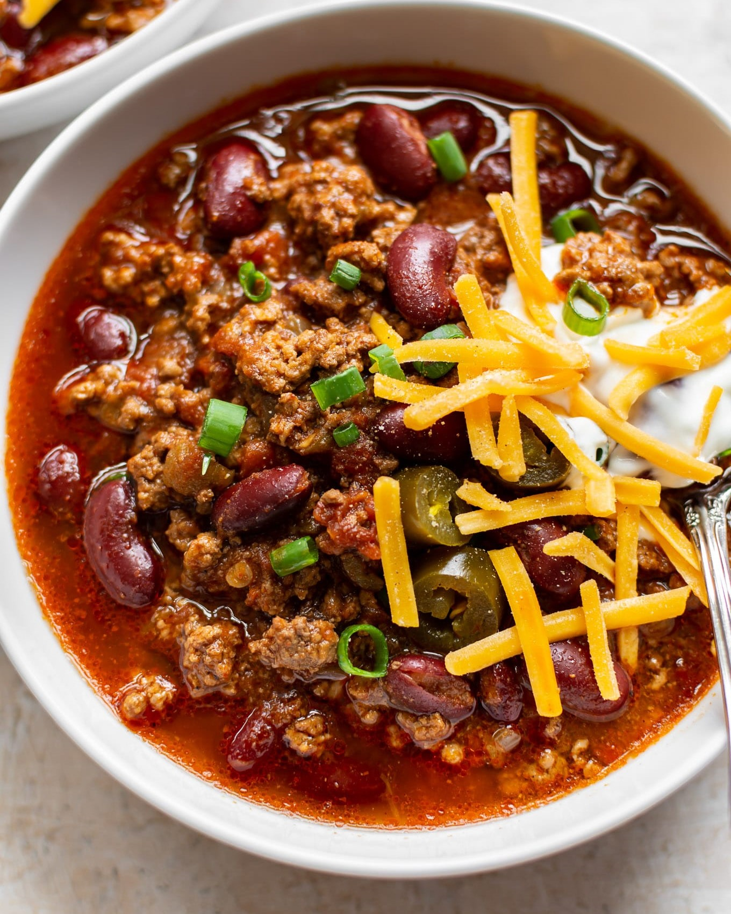

Beef Chili
Ingredients:
- 1 tablespoon olive oil
- 1 large onion, diced
- 3 cloves garlic, minced
- 1 pound (450g) ground beef (you can use lean or regular)
- 1 bell pepper, diced (any color you prefer)
- 1 can (14-ounce) diced tomatoes
- 1 can (15-ounce) tomato sauce
- 1 can (15-ounce) kidney beans, drained and rinsed
- 1 can (4-ounce) diced green chilies (optional for added heat)
- 2 tablespoons chili powder
- 1 teaspoon ground cumin
- 1 teaspoon paprika
- 1/2 teaspoon dried oregano
- 1/2 teaspoon garlic powder
- Salt and black pepper to taste
- Optional toppings: shredded cheese, sour cream, chopped cilantro, sliced green onions, diced avocado
Instructions:
- Heat olive oil in a large pot or Dutch oven over medium heat.
- Add diced onions and cook until they become translucent, stirring occasionally for about 3-4 minutes. Then add minced garlic and cook for another minute until fragrant.
- Add ground beef to the pot, breaking it up with a spoon or spatula. Cook the beef until it's browned and no longer pink, stirring occasionally. Drain excess fat if desired.
- Stir in the diced bell pepper and cook for an additional 2-3 minutes until it begins to soften.
- Add diced tomatoes, tomato sauce, drained kidney beans, diced green chilies (if using), chili powder, ground cumin, paprika, dried oregano, garlic powder, salt, and black pepper. Mix everything thoroughly to combine.
- Bring the mixture to a gentle boil, then reduce the heat to low. Cover the pot and let the chili simmer for about 30-45 minutes, stirring occasionally. This helps the flavors meld together and the chili to thicken.
- Taste and adjust seasoning if needed. If you prefer a spicier chili, you can add more chili powder or a dash of hot sauce.
- Once the chili has thickened to your liking, remove it from heat.
- Serve the beef chili hot, garnished with optional toppings such as shredded cheese, sour cream, chopped cilantro, sliced green onions, or diced avocado.